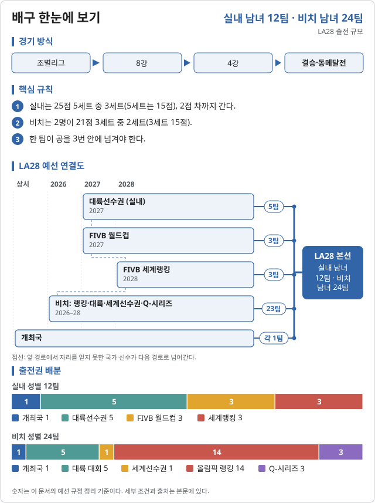
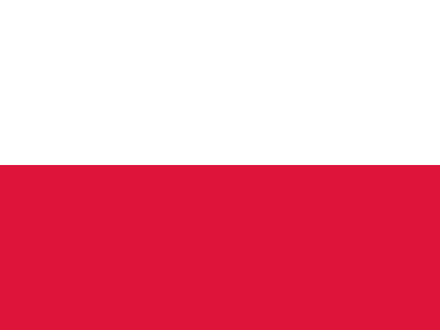

배구 (Volleyball)

LA28 출전 확정 2026-11-06 기준
| 국가 | 경로 | 비고 |
|---|---|---|
| 개최국 | ||
| 2026 아시아선수권 | ||
 폴란드 POL | 2026 유럽선수권 | |
| 2026 남미선수권 | ||
| 2026 아프리카선수권 | ||
| 2026 NORCECA 올림픽 예선 |
| 국가 | 경로 | 비고 |
|---|---|---|
| 개최국 | ||
| 2026 아시아선수권 | ||
| 2026 유럽선수권 | ||
| 2026 NORCECA 올림픽 예선 | ||
| 2026 아프리카선수권 | ||
| 2026 남미선수권 |
| 국가 | 경로 | 비고 |
|---|---|---|
| 개최국 | ||
| 2026 유럽선수권 | ||
| 2026 아프리카선수권 | ||
| 2026 아시아선수권 | 니콜라이디스·캐러허 | |
| 2026 남미선수권 | 안드레·헤나투 |
| 국가 | 경로 | 비고 |
|---|---|---|
| 개최국 | ||
| 2026 유럽선수권 | 스탐·스훈 | |
| 2026 아프리카선수권 | ||
| 2026 아시아선수권 | 페예스·클랜시 | |
| 2026 남미선수권 | 타멜라·빅토리아 |
실내는 대륙선수권 다섯 곳이 모두 끝났다. 다음은 2027 FIVB 월드컵(3자리)과 2028.06 세계랭킹(3자리). 비치 NORCECA 대륙선수권은 2026.11.04–09.
출처: Olympics.com · 일본 남자 아시아선수권 · FIVB · 폴란드 유럽선수권 · Olympics.com · 튀니지 아프리카선수권 · Olympics.com · 쿠바 NORCECA · FIVB · 튀르키예 여자 유럽선수권 · FIVB · 네덜란드·스웨덴 비치 · FIVB · 브라질 비치 두 팀 · Wikipedia · LA28 배구 예선
LA28 예선 단계 2026.10.31 기준
![배구 LA28 예선 단계. 실내 남자: 2026 아시아선수권 (2026.09, 종료, 우승 → LA28 · 상위권 → 2027 월드컵, 한국 3위, 2027 월드컵 출전권) → FIVB 월드컵 2027 (폴란드) (2027.09.10 – 26, 예정, 미확보 상위 3팀 → LA28, 한국 출전 확정) → FIVB 세계랭킹 (2028, 예정, 미확보 상위 3팀 → LA28) → LA28 본선. 실내 여자: 2026 아시아선수권 (2026.08 – 09, 종료, 우승 → LA28, 한국 8위) → FIVB 월드컵 2027 (2027.08.20 – 09.05, 예정, 미확보 상위 3팀 → LA28, 한국 출전 확정 (세계 27위)) → FIVB 세계랭킹 (2028, 예정, 미확보 상위 3팀 → LA28) → LA28 본선. 비치 (남녀 각 24팀): 대륙선수권 2026 (2026.08 – 11, 진행 중, 대륙마다 1팀 → LA28) → 2027 세계선수권 (네덜란드) (2027, 예정, 1팀 → LA28) → 올림픽 랭킹 · Q-시리즈 (2028, 예정, 랭킹 14 · Q-시리즈 3팀) → LA28 본선.](assets/pathways/olvolleyball.svg)
| 단계 | 시기 | 상태 | 다음 단계 | 결과·진출 | 한국 |
|---|---|---|---|---|---|
| 2026 아시아선수권 | 2026.09 | 종료 | 우승 → LA28 · 상위권 → 2027 월드컵 | 3위, 2027 월드컵 출전권 | |
| FIVB 월드컵 2027 (폴란드) | 2027.09.10 – 26 | 예정 | 미확보 상위 3팀 → LA28 | 출전 확정 | |
| FIVB 세계랭킹 | 2028 | 예정 | 미확보 상위 3팀 → LA28 |
| 단계 | 시기 | 상태 | 다음 단계 | 결과·진출 | 한국 |
|---|---|---|---|---|---|
| 2026 아시아선수권 | 2026.08 – 09 | 종료 | 우승 → LA28 | 8위 | |
| FIVB 월드컵 2027 | 2027.08.20 – 09.05 | 예정 | 미확보 상위 3팀 → LA28 | 출전 확정 (세계 27위) | |
| FIVB 세계랭킹 | 2028 | 예정 | 미확보 상위 3팀 → LA28 |
| 단계 | 시기 | 상태 | 다음 단계 | 결과·진출 | 한국 |
|---|---|---|---|---|---|
| 대륙선수권 2026 | 2026.08 – 11 | 진행 중 | 대륙마다 1팀 → LA28 | ||
| 2027 세계선수권 (네덜란드) | 2027 | 예정 | 1팀 → LA28 | ||
| 올림픽 랭킹 · Q-시리즈 | 2028 | 예정 | 랭킹 14 · Q-시리즈 3팀 |
비치 NORCECA 대륙선수권은 2026.11.04–09 푸에르토리코에서 열린다.
출처: Olympics.com · 일본 남자 아시아선수권 · OCA · 태국 여자 아시아선수권 · Starnews · 한국 여자 2027 월드컵 출전
2026 주요 대회 결과 2026-11-07 10:39 KST
위키백과 대회 문서에서 자동으로 모은다. 대회 중에는 한 시간마다 새로 읽는다. 한국 선수가 있는 줄은 붉게 칠했다. 하계 실시간 전체 →
아이치·나고야 아시안게임 비치발리볼 아이치·나고야 · 09.20~10.03 종료 결과 2/2종목 · 한국 금0 은0 동0
| 종목 | 금 | 은 | 동 |
|---|---|---|---|
| Medalists | |||
| 남자 | |||
| 여자 | |||
메달 순위:  카타르 1-0-0 ·
카타르 1-0-0 ·  태국 1-0-0 ·
태국 1-0-0 ·  중국 0-1-0 ·
중국 0-1-0 ·  인도네시아 0-1-0 ·
인도네시아 0-1-0 ·  일본 0-0-1 ·
일본 0-0-1 ·  필리핀 0-0-1
필리핀 0-0-1
출처: 위키백과 Beach volleyball at the 2026 Asian Games · 2026-11-06 22:37 읽음
아이치·나고야 아시안게임 배구 아이치·나고야 · 09.19~10.04 종료 결과 2/2종목 · 한국 금0 은0 동0
| 종목 | 금 | 은 | 동 |
|---|---|---|---|
| Medalists | |||
| 남자 | |||
| 여자 | |||
메달 순위:  중국 1-0-0 ·
중국 1-0-0 ·  이란 1-0-0 ·
이란 1-0-0 ·  일본 0-2-0 ·
일본 0-2-0 ·  파키스탄 0-0-1 ·
파키스탄 0-0-1 ·  태국 0-0-1
태국 0-0-1
출처: 위키백과 Volleyball at the 2026 Asian Games · 2026-11-06 22:37 읽음
예선 요약
2028 LA 올림픽 배구는 실내와 비치 각각 남녀 종목이 있다. 개최국 미국은 모든 종목에 자동 출전한다.
실내 배구
남녀 각 12팀.
| 경로 | 남자 | 여자 |
|---|---|---|
| 개최국 | 1 | 1 |
| 대륙선수권 | 5 | 5 |
| FIVB 월드컵 | 3 | 3 |
| FIVB 세계랭킹 | 3 | 3 |
| 합계 | 12 | 12 |
비치 배구
남녀 각 24팀.
| 경로 | 남자 | 여자 |
|---|---|---|
| 개최국 | 1 | 1 |
| 대륙 대회 | 5 | 5 |
| 세계선수권 | 1 | 1 |
| 올림픽 랭킹 | 14 | 14 |
| 올림픽 Q-시리즈 | 3 | 3 |
| 합계 | 24 | 24 |
2024 메달리스트
| 세부종목 | 금 | 은 | 동 |
|---|---|---|---|
| 실내 남자 | 프랑스 | 폴란드 | 미국 |
| 실내 여자 | 이탈리아 | 미국 | 브라질 |
| 비치 남자 | 스웨덴 | 독일 | 노르웨이 |
| 비치 여자 | 브라질 | 캐나다 | 스위스 |
한국 상황 분석
이 항목은 하단에만 추가한다. 항목은 아래 목록 끝에 <li>로 덧붙인다.
- 현황 (2026.10 기준): 자료 입력 필요
각주
- Volleyball at the 2028 Summer Olympics (위키백과)